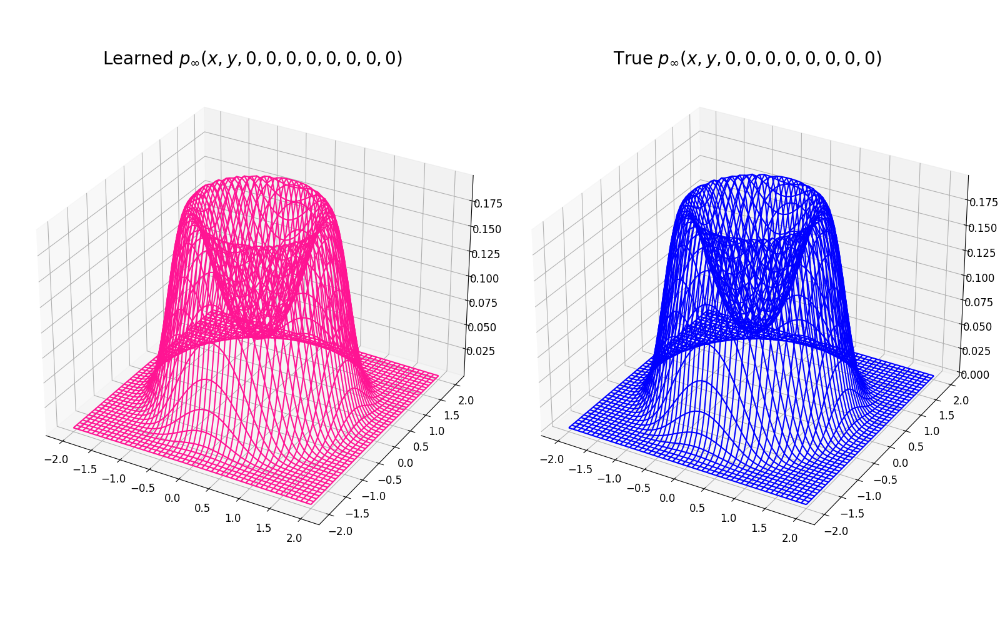
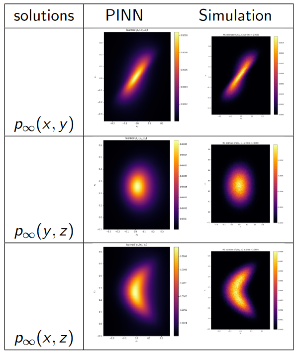
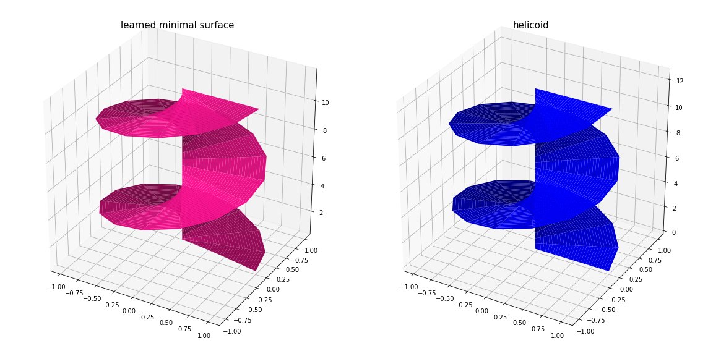
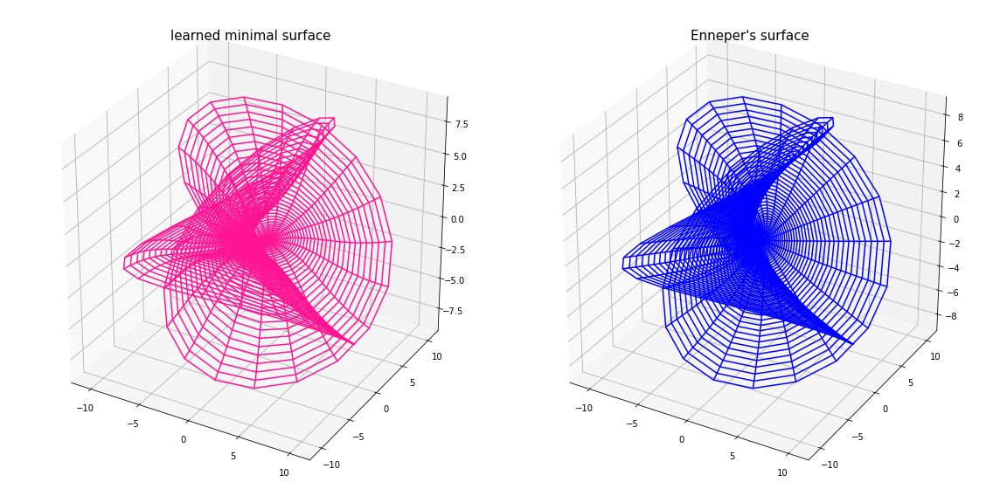

This animation shows why data assimilation is essential. Without incorporating data into our dynamical models we can very easily go astray and have predictions that are far away from the truth. Here dist denotes the 2nd Wasserstein distance between the prdicted and the true filtering distributions. Two distributions in each panel originate from two different initial distributions, the left panel indicates that the filtering algorithm used here (particle filter) is stable because after a certain amount of time the filtering distrinutions become near-identical.
This animation shows a network learning the steady state solution to a 2D Fokker-Planck equation with drift that can be represented as the gradient of $-(x^2+y^2-1)^2$ i.e. with a circle attractor.

Steady state of a 10 dimensional Fokker-Planck equation with a 10 dimensional hypersphere attractor, learned with a physics informed neural net. In both panels $p_\infty(x, y, 0, 0, 0, 0, 0, 0, 0, 0)$ has been normalized in a way such that $\iint_{\mathbb R^2}p_\infty(x, y, 0, 0, 0, 0, 0, 0, 0, 0)\,dx\,dy=1$ .

Steady state of a Fokker-Planck equation with drift that is given by the Lorenz 63 system, learned with a physics informed neural net. The right panels show the Monte-Carlo simulations.

The helicoid, learned as the solution of the minimal surface PDE for a helix with a physics informed neural net where the boundary condition is satisfied with the augmented Lagrangian method.

A self-intersecting minimal surface called Enneper's surface learned as the solution to a variational problem with a physics informed neural net.